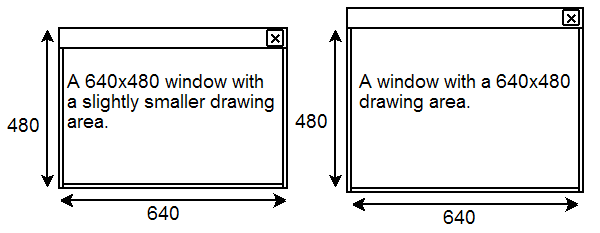
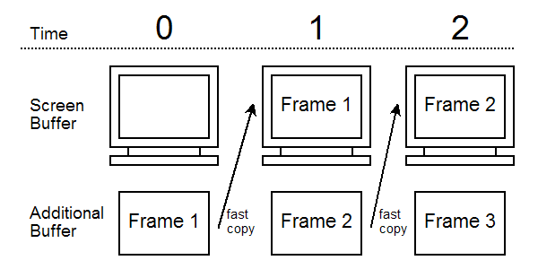

Avoid Common Pitfalls when Programming 2D Graphics in Java: Lessons Learnt from Implementing the Minueto Toolkit
by Alexandre Denault and Jörg Kienzle
This paper presents the core knowledge required to properly develop 2D games in Java. We describe the common pitfalls that can easily degrade graphics performance and show how we achieved impressive frames-per-second display updates when implementing Minueto, a game development framework.
1. Introduction
Java provides two frameworks for designing graphical user interfaces: AWT and Swing. Although these frameworks are ideal for data manipulation, they render much too slowly to be used in game development. The following article presents the core knowledge required to develop fast 2D games in Java without using Swing or AWT. This article also describes the mistakes commonly made by beginner Java 2D programmers that can easily degrade display performance. These lessons we learned while developing Minueto[1, 5], a game development tool for McGill undergraduate students.
1.1 Basic Building Blocks
There are 2 basic building blocks for graphics in a 2D game, a drawing canvas and a collection of images. The canvas can either be displayed on the screen as a window, or encompass the entire screen. Images are the building blocks that get drawn on the canvas. They are drawn repetitively on the screen to produce animation.
In Java, the canvas is either a Frame or a JFrame object. The images are stored in BufferedImage objects. Images can be drawn on the canvas or over other images through the use of a Graphics2D object. The following sections explain how to properly build your canvas (section 2) and your images (section 3).
2. The Canvas
As previously mentioned, the drawing canvas should be a simple JFrame. To insure flicker free performance, the "ignore repaint" property should be enabled (using the setIgnoreRepaint method). This prevents the Java virtual machine (JVM) from trying to modify the content of the canvas.
2.1 Graphic Device and Configuration
The GraphicsDevice class is used to describe graphic output devices, such are your computer's graphic card. It contains a collection of GraphicsConfiguration objects that describe all the possible configurations for the graphic card, i.e. all the supported resolutions and color modes.
// Acquiring the current Graphics Device and Graphics Configuration
GraphicsEnvironment graphEnv = GraphicsEnvironment.getLocalGraphicsEnvironment();
GraphicsDevice graphDevice = graphEnv.getDefaultScreenDevice();
GraphicsConfiguration graphicConf = graphDevice.getDefaultConfiguration();
When creating a new JFrame, we highly suggest passing the current graphic configuration constructor as a parameter. This allows the JFrame to be specially constructed for that graphic configuration and avoids common color mode problems (as described in section 3.3).
//Creating the JFrame
JFrame jFrame = new JFrame(graphicConf);
jFrame.setIgnoreRepaint(true);
jFrame.setDefaultCloseOperation(JFrame.EXIT_ON_CLOSE);
jFrame.setTitle("Minueto");
jFrame.setFocusTraversalKeysEnabled(false);
In addition, the current graphic configuration is needed to produce hardware accelerated images (as described in section 3.4).
2.2 Proper Size for a Window
Creating a drawing surface of a specific size can be tricky with a normal windowed frame. A 640 by 480 pixels JFrame will have a drawing surface of approximately 630 by 440 pixels (see figure 1). This loss of space can be explained by the title bar and the window borders which are include in the original size of 640 by 480 pixels [6].
An easy solution to this problem is to insert a 640x480 Canvas object (with ignore repaint set to true) inside the JFrame. This will force the JFrame to contain a true 640 by 480 drawing surface, regardless of the size of the title bar or windows border. Note that this solution requires all drawing to be done on the Canvas, instead of the JFrame. We found that this solution is practical and has no impact on performance.

Figure 1 : Difference between a 640x480 window and a
640x480 drawing area.
Note: This problem does not exist for full screen windows or border-less windows, as they don't have borders or title bars to reduce the size of the drawing area.
2.3 Fullscreen Window and Changing the Resolution
The GraphicsDevice object can also be used to change the resolution of the screen or transform a frame so it covers the whole screen (full screen mode). We found that resolution changes using a pre-1.5 JVM are dangerous and could cause the process to crash [6]. In addition, resolution changes are not supported with a pre-1.4 JVM under Linux.
//Switching Resolution and to Full Screen
DisplayMode disMode = new DisplayMode( width, height, 32, DisplayMode.REFRESH_RATE_UNKNOWN);
graphDevice.setFullScreenWindow(jFrame);
graphDevice.setDisplayMode(disMode);
2.4 Double Buffering
The key to smooth animation in Java is to use double buffering. Double buffering is a technique where a memory buffer is created as a workspace for changes to appear on the screen. The content of this buffer is displayed on screen only once all the changes to the current frame have been completed (see figure 2). This avoids flickering and other graphic artifacts commonly produced by the progressive updating of the screen. Double buffering also allows the synchronization of the screen updates with the refresh rate of the monitor.

Figure 2 : Double Buffering.
In Java, double buffering is provided by the BufferStrategy class. Although BufferStrategy allows for n-buffering, we found that double-buffering (that is, creating a BufferStrategy with 2 buffers) was optimal.
//Setting up Double Buffering
jFrame.createBufferStrategy(2);
BufferStrategy bufferStrategy = jFrame.getBufferStrategy();
Graphics2D graph2D = (Graphics2D)bufferStrategy.getDrawGraphics();
3. Buffered Images
Chet Haase, an engineer on the Java 2D team, documented no less than 38 different methods to create an image with the Java 1.4 API [2]. These different methods produce images with various characteristics. We found that the optimal methods for producing efficient BufferedImage object were found in the GraphicsConfiguration object [3] used to create the JFrame (as describe in the section 2.1). They assure greatest compatibility between the images and the drawing canvas.
// Creating a hardware accelerated image with bitmask transparencies.
BufferedImage imageBitMask = graphicConf.createCompatibleImage(x,y, Transparency.BITMASK);
3.1 Volatile Images vs. Managed Images
Two types of images in Java are hardware accelerated: volatile images and managed images. Volatile images are stored only in video memory and are extremely fast. However, if the video memory is overwritten by another application, the content is lost. Managed images are stored in both video memory and conventional memory, thus do not suffer from the "content lost" problem. Although this redundancy incurs a performance cost, we found manually managing volatile images would be too much overhead.
Certain operations that can be applied to a BufferedImage object, such as manipulating the image at the pixel level, can make an object lose it's hardware accelerated features. When this occurs, the image is no longer stored in video memory. To make it regain its hardware acceleration, a manipulated image should be copied to a new accelerated BufferedImage before it is used.
3.2 Color Mode
The key to successful image acceleration is to create an image with the same characteristics as the current display. For example, if the current display is switched to RBGA 32-bit color mode, then all images should be created, loaded and/or converted to this color mode. To this extent, we copy every loaded image into a new accelerated BufferedImage, which automatically has the correct color mode.
If this is not done and images are loaded and stored using different color modes, those images need to be converted to the screen's color mode every time they are drawn to the canvas, causing tremendous slowdowns.
3.3 Transparencies
Java supports three type of transparencies: opaque (no transparencies), bitmask (a pixel is either transparent or not) and alpha (variable level of transparency for each pixel). We found the use of either opaque or bitmask transparencies produces impressive performance, even on modest graphic hardware. Alpha transparencies are much slower, especially when using graphic cards that do not provide hardware support for aplpha transparencies. We therefore recommend avoiding alpha transparencies, unless they are specifically needed.
// Creating a hardware accelerated image with bitmask alpha.
BufferedImage imageAlpha = graphicConf.createCompatibleImage(x,y, Transparency.TRANSLUCENT);
3.4 Rendering to the screen
As previously mentioned in section 2.4, images should first be drawn on the memory buffer.
//Drawing an image on the memory buffer
graph2D.drawImage(bufferedImage, x, y, null);
Once the frame is ready, we can render the content of the memory buffer to the screen.
// Rendering the current buffer to screen
graph2D.dispose();
bufferStrategy.show();
graph2D = (Graphics2D)bufferStrategy.getDrawGraphics();
5. Conclusion and Future Work
Despite our initial apprehension about using Java for game development, Java 2D has shown to be very efficient, if used properly. Two years of using Minueto for the game development of COMP-361 projects, the Systems Development Project course at McGill, has shown that it performs extremely well, thanks to the different optimizations presented in this article. Our future work in this area will focus on efficient ways to combine Swing and Java 2D technology.
References
- 1
- Alexandre Denault, Minueto, an Undergraduate Teaching Development Framework, Master's Thesis, McGill University, August 2005.
- 2
- Chet Haase, BufferedImage as Good as Butter Part 1, August 14, 2003, <http://weblogs.java.net/blog/chet/>.
- 3
- Chet Haase, ToolkitBufferedVolatileManagedImage Strategies, August 11, 2004, <http://weblogs.java.net/blog/chet/>.
- 4
- Clingman / Kendall / Mesdaghi, Practical Java Game Programming, Charles River Media, June 2004, 508 pages.
- 5
- Minueto, <http://minueto.cs.mcgill.ca/>.
- 6
- JavaGaming Forums, <http://www.javagaming.org>.
Biography
Alexandre Denault ( Alexandre.Denault@mail.mcgill.ca ) is a PhD student in the School of Computer Science at McGill University. His research interests include fault tolerant distributed environments, teaching tools and game development (specifically content generation and cheat prevention). He is an active member of both the Mammoth research project and CSGames, an inter-university computer science competition.
Jörg Kienzle ( Joerg.Kienzle@mcgill.ca ) is an assistant professor at the School of Computer Science at McGill Universiy in Montreal, Canada, where he is leading the Software Engineering Laboratory. He holds a Ph.D. and engineering diploma from the Swiss Federal Institute of Technology in Lausanne (EPFL). His current research interests include fault tolerance, software development methods, aspect-orientation and computer games.